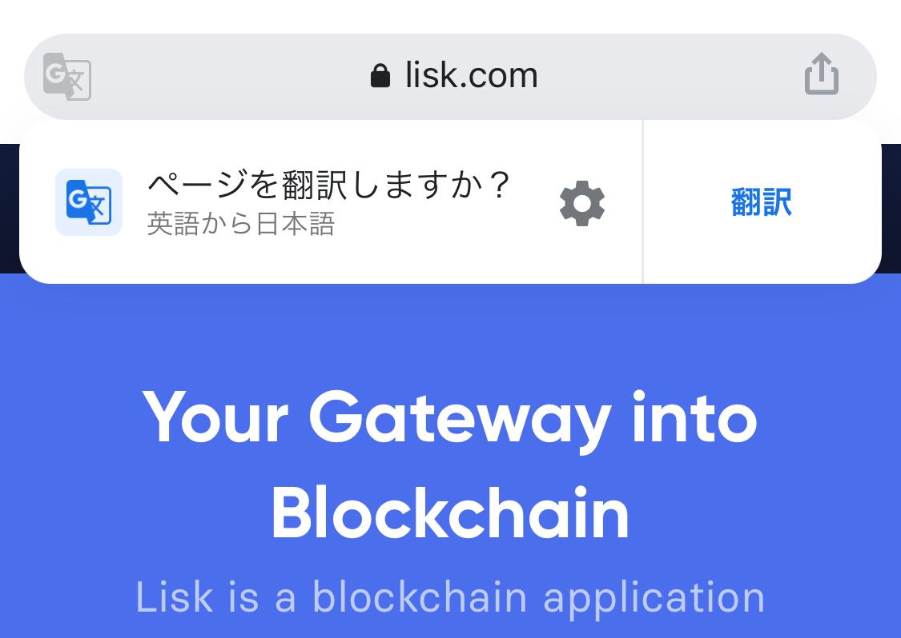
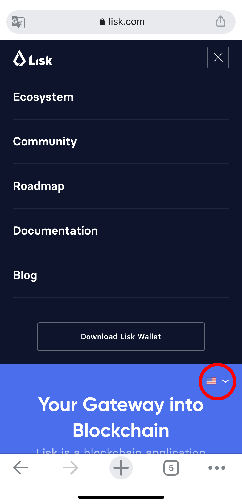

Liskの公式サイトがリニューアルされ、日本語の自動翻訳に対応しました。最新情報など正しい情報は公式サイトから入手をお願いします。翻訳方法は以下を参照してください。公式サイトへのリンクはこのポップアップウィンドウの一番下にあります。
翻訳方法｜PCの場合
Lisk公式サイト右上の国旗アイコンから日本語を選択してください。
翻訳方法｜モバイルの場合
①Google Chromeの場合「ページを翻訳しますか？」と出る場合があります。その場合は「翻訳」選択してください。

②アドレスバーに翻訳アイコンがある場合は、そのアイコンを押すと翻訳できます。
③何もない場合はLisk公式サイトの右上にあるメニューボタンを押してください。メニューボタンを押すと英語メニューが表示され、その英語メニューの下に国旗アイコンが表示されます（下記赤丸部分）。国旗アイコンを押すと言語リストが表示されるので日本語を選択してください。
